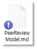

1. 소스 리포지터리 (Source Repository)
1.1. 개요
외부 도구 연동 없이 SILKROAD에 직접 소스파일을 등록하여 변경관리를 수행할 수 있도록 지원하는 모듈이다.
SILKROAD 웹과 로컬 Agent를 통해 소스파일 Check out, Check in, Fetch 등의 기능을 수행할 수 있으며, 웹과 로컬 간 소스 리포지터리 데이터 동기화를 위한 기능을 지원한다.
1.2. Repository 영역
Repository 영역은 실크로드 서버에 등록한 소스 파일/폴더에 대한 정보(Name, Lock, Version, Baseline, Status, Editor, Modified Date)를 표시하고, 소스파일/폴더 추가, 추적성 연결, Static Analysis 데이터 연동 결과 등을 표시한다.
1.2.1. 화면 구성
Repository 영역은 상단 기능버튼과 하단 소스 파일 리스트 영역으로 구성되어 있다.
구분 | 명칭 | 설명 |

| Add Folder | Repository 영역에 최상위 폴더 생성 |

| Add File | 소스코드 파일 로컬 PC로부터 추가 |

| Add Traceability | 소스파일과 요구사항간의 추적성 연결 |

| Download Repository | Repository 내 모든 파일 다운로드 |

| Show CheckOut | Check-Out 상태의 소스 파일만 표시 |

| Defect Status | Static Analysis Metric 포맷(11번 영역 변경) 적용 여부 결정 |
| Name | 소스코드 파일 이름 |

| Lock | 파일의 Check Out 여부 표시(True/False) |
| Version | 소스코드 버전 |

| BL | 형상관리 모듈에서 베이스라인 형상항목으로 등록된 파일 표시 |

| Status | 해당 파일의 Workflow 상태 표시 |

| Editor | 현재 파일을 업로드하거나 형상괸리 모듈에서 해당 파일을 베이스라인 형상항목으로 등록한 사용자 이름 |
| Revised Date | 파일 수정 시간 |

| Modified Date | 파일 업로드 시간 |
1.2.2. 폴더 관리
1.2.2.1. 폴더 생성 (Add Folder)
소스파일 폴더를 생성하는 기능이다.
① Repository 영역 상단의 ‘Add Folder’ 버튼을 클릭한다.
② 폴더 이름을 입력한다.
최상위 폴더 이름이 동일한 폴더가 있을 경우 알림창이 생성되고 폴더가 생성되지 않는다(하위 폴더는 동일한 이름으로 생성 가능). 최초 생성시에만 폴더 이름 설정이 가능하며, 생성된 폴더의 이름 변경은 불가능하다. 폴더는 생성한 순서로 생성된 순서로 위에서 아래로 정렬되며, 폴더의 위치는 변경 불가하다. |
1.2.2.2. 폴더 수정
폴더 데이터를 수정하는 기능이다.
① 폴더를 선택한다.
① 마우스 우클릭하여 생성된 Context 메뉴에서 ‘Detail Info’를 선택한다.
② 폴더 정보창에서 ‘Priority’,‘Description’을 수정한다.
③ 수정이 완료되면 정보창 하단의 OK 버튼을 클릭하여 수정내용을 저장한다.
1.2.2.3. 폴더 삭제
폴더를 삭제하는 기능이다.
① 폴더를 선택한다.
② 마우스 우클릭하여 생성된 Context 메뉴에서 Delete를 선택한다.
③ 또는, 정보창 좌측 하단의 Delete를 선택한다.
④ ‘Confirm’ 창이 생성되면 Yes 버튼을 클릭한다.
폴더 삭제 시 폴더에 포함된 소스 파일이 모두 삭제된다. 폴더에 포함된 소스 파일 중 Check-Out 상태가 있을 경우 폴더 삭제가 되지 않는다. |
1.2.3. 소스파일 관리
1.2.3.1. 소스파일 등록 (Add File)
Repository에 소스파일을 업로드 하는 기능이다.
① Repository 영역 상단의 ‘Add File’ 버튼을 클릭한다. 또는 폴더 선택 후 우클릭하여 생성된 Context 메뉴에서 Add File을 선택한다.
- 폴더가 선택 된 상태에서는 해당 폴더에 소스 파일이 등록된다.
- 폴더가 선택되지 않은 상태에서는 Root 위치에 소스 파일이 등록된다.
② ‘Upload File’ 창이 생성된다.
③ ‘Browse’ 버튼을 클릭한다.
④ 탐색기 창이 생성되면 업로드하고자 하는 소스파일을 검색하여 선택한다.
⑤ 또는, 소스파일 저장폴더에서 업로드 파일을 Drag & Drop으로 추가한다.
⑥ Comment를 입력한다.
⑦ ‘Upload File’ 창 우측 하단의 ‘Commit’ 버튼을 클릭하여 소스파일을 등록한다.
파일은 생성한 순서로 위에서 아래로 정렬된다. (사용자 임의로 위치 변경 불가하며, Sort 기능을 통한 정렬순서 변경은 가능하다.) |
1.2.3.2. 소스파일 수정
1.2.3.2.1. 정보창 내용 수정
소스파일 정보창 데이터를 수정하는 기능이다.
① Repository 영역에서 소스 파일을 선택한다.
② 마우스 우클릭하여 생성된 Context 메뉴에서 ‘Detail Info’를 선택한다.
③ 또는, 파일 뷰어 영역에서  아이콘을 선택한다.
아이콘을 선택한다.
④ 소스 파일 정보창에서 ‘Priority’,‘Description’을 수정 후 OK 버튼을 클릭한다.
1.2.3.2.2. 소스 파일 수정(Check In / Check Out)
등록된 소스 파일은 Check-Out/In 기능을 통하여 소스파일 수정 및 버전개정 기능을 수행할 수 있다.
① 대상 파일을 우클릭한다.
② 생성된 컨텍스트 메뉴 중‘Check out' 버튼을 클릭한다.
③ “Success” 창이 생성되면 ‘OK’ 버튼을 클릭한다.
④ 파일 아이콘에 잠금표시가 생성되며 Check Out 상태로 변경되면서 파일이 다운로드 된다.
- 파일 리스트에서 Editor가 Check Out을 수행한 사용자로 변경된다.
⑤ 다운로드 된 파일을 수정한다.
⑥ Check Out 상태의 파일을 우클릭하여 Check-In을 클릭한다.
⑦ ‘Upload File’ 창이 생성된다.
① ‘Browse’ 버튼을 클릭한다.
② 탐색기 창이 생성되면 수정된 소스파일을 검색하여 선택한다.
③ 또는, 소스파일 저장 폴더에서 수정된 소스파일을 Drag & Drop으로 추가한다.
④ Comment를 입력한다.
⑤ ‘Upload File’ 창 우측 하단의 ‘Commit’ 버튼을 클릭하여 수정된 소스파일의 Check In을 완료한다.
⑥ ‘Diff’ 기능을 통하여 소스파일의 수정된 부분을 확인할 수 있다.
⑦ ‘Success’ 창이 생성되면 OK 버튼을 클릭하여 Check In을 완료한다.
⑧ Repository 목록에서 버전 변경과 수정 시간을 확인한다.
Check Out은 Source Repository 모듈 권한이 ‘Writer’ 이상인 사용자만 가능하다. Check Out된 파일은 잠금 설정되어 다른 사용자가 Check Out할 수 없다. Check Out을 수행한 사용자만 Check-In이 가능하다. 'Check out' 후 ‘Check in’ 시 파일 이름이 동일하지 않은 경우 ‘Check in’할 수 없다. 파일 내용에 변경 사항이 없는 경우 ’Check in’ 하여도 파일의 버전이 상승하지 않는다. Baseline에 포함된 소스 파일의 경우 Change Item Workflow 설정에 따라 Check Out이 제한된다. 자세한 내용은 Configuration 모듈 Change Item 관리를 참조한다. |
1.2.3.2.3. 소스 파일 수정 취소(UnCheck Out)
Check Out된 파일은 ‘UnCheck Out’을 수행하여 Check-Out을 취소 할 수 있다. UnCheck Out 파일은 잠금이 해제된다.
① Check Out 상태인 파일을 우클릭한다.
② 생성된 Context 메뉴에서 UnCheck Out을 선택한다.
③ ‘Success’ 창이 생성되면 OK 버튼을 클릭한다.
④ 소스 파일이 Check-In 상태로 변경되고, Editor가 이전 버전 생성자로 변경된다.
UnCheck Out은 Check Out을 수행한 사용자만 가능하다. |
1.2.3.2.4. 소스 파일 수정 취소(UnCheck Out – 관리자 권한)
Check Out된 파일은‘UnCheck Out’권한은 Check Out 사용자만이 가질 수 있으나, 사용자 부재등을 이유로 관리자(Admin) 권한을 이용하여 UnCheck Out을 수행할 수 있다. UnCheck Out 파일은 잠금이 해제된다.
① 설정 아이콘( )을 클릭한다.
)을 클릭한다.
② UnCheck Out (Admin) 창에서 UnCheck Out 대상 파일을 체크 후 OK 버튼을 클릭한다.
③ 소스 파일이 Check-In 상태로 변경되고, Editor가 이전 버전 생성자로 변경된다.
UnCheck Out(Admin) 권한은 PM/모듈권한(Admin) 또는 User 권한(Admin)을 가진 사용자만 가능하다. |
1.2.3.3. 소스파일 삭제
소스파일을 삭제하는 기능이다.
① 소스파일을 선택한다.
② 마우스 우클릭하여 생성된 Context 메뉴에서 Delete를 선택한다.
③ 또는, Context 메뉴의 ‘Detail Info’ 또는 소스 뷰어창 좌측 상단의 ‘’ 아이콘 클릭을 통하여 생성되는 소스 정보창 좌측 하단의 Delete를 선택한다.
④ ‘Confirm’창이 생성되면 Yes 버튼을 클릭하여 소스파일을 삭제한다.
삭제 기능은 관리자(administrator, Project Manager, 모듈 권한 Admin) 권한을 가진 사용자만 가능하다. 파일이 Check-Out인 경우 삭제 기능이 비활성화 된다. |
1.2.4. 추적성 관리
1.2.4.1. 추적성 등록
요구사항과 소스파일간의 추적성을 연결하는 기능이다.
① Repository 영역 상단의 ‘Add Traceability’ 버튼을 클릭한다.
② ‘Traceability’ 창이 생성된다.
③ ‘Menu & Tracker Tree’의 Menu에서 ‘Requirement’를 선택한다.
④ 문서 리스트에서 추적성을 연결한 Requirement 문서를 선택한다.
⑤ 우측 File List에서 추적성을 연결하기 위한 소스파일을 선택한다.
⑥ 선택한 소스파일을 Requirement List 영역의 요구사항으로 Drag & Drop한다.
⑦ 요구사항 아이디 하위로 추적성이 연결된 파일이 표시된다.
⑧ 하단 OK 버튼을 클릭하여 추적성 연결 정보를 저장한다.
⑨ 추적성 연결 정보는 Requirement 메뉴의 ‘Linked Item and Documents’에서 추적성을 확인한다.
소스 파일은 요구사항 문서만 추적성을 연결할 수 있다(Test Plan/Test Procedure 불가). 소스 파일과 요구사항의 추적성 관계는 소스 파일이 하위이며, 요구사항이 상위이다. 소스 파일 내 소스 코드와 요구사항과의 추적성은 연결 할 수 없다. |
1.2.4.2. 추적성 삭제
요구사항과 소스파일간의 추적성을 삭제하는 기능이다.
① Repository 영역 상단의 ‘Add Traceability’ 버튼을 클릭한다.
② ‘Traceability’ 창이 생성된다.
③ ‘Menu & Tracker Tree’의 Menu에서 ‘Requirement’를 선택한다.
④ 문서 리스트에서 추적성이 연결된 Requirement 문서를 선택한다.
⑤ Requirement List에 추적성이 연결된 요구사항 아이디 좌측의  아이콘을 클릭하여 추적성이 연결된 소스파일을 확인한다.
아이콘을 클릭하여 추적성이 연결된 소스파일을 확인한다.
⑥ 추적성이 연결된 소스 파일을 우측 File List 영역으로 Drag & Drop한다.
⑦ 요구사항 아이디 하위에 추적성이 연결된 파일이 삭제된다.
⑧ 하단 OK 버튼을 클릭하여 추적성 연결 정보를 저장한다.
1.2.5. 파일 다운로드 (Download Repository)
리포지토리에 등록된 모든 파일을 Zip 파일로 받는 기능이다.
① Repository 영역 상단에서 ‘Download Repository' 버튼을 클릭한다.
② ’FileRepository.zip’ 파일이 사용자 로컬 PC로 다운로드 된다.
다운로드 된 파일은 최신 버전의 내용을 포함한다. 다운로드 위치는 인터넷 브라우저(Chrome) 설정에 따르며 일반적으로 ‘C:\Users\윈도우 계정\Downloads’ 이다. |
1.2.6. 작업중인 파일 표시하기(Check Out All)
파일 리스트에서 현재 작업중인 Check Out 상태의 파일만 표시하는 기능이다.
① Repository 영역 상단에서 Show CheckOut 버튼을 클릭한다.
② 확장된 메뉴에서 CheckOut All을 클릭한다.
③ Repository 영역에서 CheckOut 상태의 파일과 파일이 포함된 폴더만 표시된다.
1.2.7. 로그인 사용자가 작업 중인 파일 표시하기(Check Out By Me)
파일 리스트에서 로그인한 사용자가 Check Out한 파일만 표시하는 기능이다.
① Repository 영역 상단에서 Show CheckOut 버튼을 클릭한다.
① 확장된 메뉴에서 CheckOut By Me를 클릭한다.
② Repository 영역에서 로그인 사용자가 CheckOut 상태의 파일과 파일이 포함된 폴더만 표시된다.
1.2.8. Repository 목록 접기/펼치기/Show CheckOut
리포지토리에 등록된 폴더 목록을 Collapse/Expand 하거나 Check Out된 파일만 표시하는 기능이다.
1.2.8.1. 목록 접기
① Repository 영역 우측 상단에서 아이콘을 클릭한다.
② 최상위 폴더 기준으로 모든 폴더가 접힘 상태로 표시된다.
1.2.8.2. 목록 펼치기
① Repository 영역 우측 상단에서 아이콘을 클릭한다.
② 최하위 폴더 기준으로 모든 폴더가 펼쳐짐 상태로 표시된다.
1.3. File Viewer
File Viewer 영역은 소스파일 내용과 정보(버전, History, Download, Physical LOC, Logical LOC)를 표시한다.
좌측 Repository에 표시된 소스 파일을 더블클릭하면 해당 소스 파일에 대한 내용이 표시된다.
Index | Name | Description |
| ‘‘ | 선택 파일 정보창 생성 |
| Version | 선택 파일 정보 선택 펼침 메뉴 |
| Version Download | |
| Physical LOC, Logical LOC | Physical LOC, Logical LOC 표시(.c, .cc, .h 등 파일의 Logical LOC 표시) |
| File Viewer | 선택 파일 내용 표시 |
| Diff Viewer | 버전간 변경 내용 비교 표시 |
1.3.1. 버전 관리 (Version)
선택한 버전의 소스파일 내용을 표시한다.
① Repository 목록에서 소스 파일을 더블 클릭한다.
② 우측 파일 뷰어 영역이 생성된다.
③ 파일 뷰어 영역 상단의 버전 콤보 박스를 클릭하여 버전을 변경한다.
④ 파일 뷰어 영역에서 해당 버전의 내용을 확인한다.
1.3.2. 히스토리 확인(Vision History)
소스파일의 버전에 대한 내용(Version/Description/Editor/Revision Date/Baseline Version/Change Request)을 표시한다.
① Repository 목록에서 소스 파일을 더블 클릭한다.
② 우측 파일 뷰어 영역이 생성된다.
③ 파일 뷰어 영역 상단의 Version History를 클릭한다.
④ 소스 파일에 대한 Revision History 창이 생성된다.
삭제 권한을 가진 관리자(administrator, Project Manager, 모듈 권한 Admin)는 버전 정보 우측 삭제 아이콘을 클릭하여 버전 정보를 삭제할 수 있다. 최신 버전 정보는 삭제할 수 없다. |
1.3.3. 소스 파일 다운로드(Vision Download)
파일 뷰어에 표시되는 소스 파일 버전을 다운로드 할 수 있다.
① Repository 목록에서 소스 파일을 더블 클릭한다.
② 우측 파일 뷰어 영역이 생성된다.
③ 파일 뷰어 영역 상단의 Version Download를 클릭한다.
① 현재 화면에서 보이는 버전의 소스 파일이 사용자 로컬 PC로 다운로드 된다.
다운로드 위치는 인터넷 브라우저(Chrome) 설정에 따르며 일반적으로 ‘C:\Users\윈도우 계정\Downloads’ 이다. |
1.3.4. 소스 파일 뷰어 폰트 크기 설정(Font Size)
파일 뷰어에 표시되는 폰트 크기를 변경할 수 있다.
① Repository 목록에서 소스 파일을 더블 클릭한다.
② 우측 파일 뷰어 영역이 생성된다.
③ 파일 뷰어 영역 상단의 Font Size 콤보박스의 설정값을 변경한다.
1.4. Diff Viewer
Diff Viewer는 하나의 소스파일에 대한 버전 간의 변경사항(New/Modify/Delete)을 색깔로 표시한다. 사용자가 선택한 2개의 버전에 대한 변경사항이 각각의 Viewer에 표시된다.
Index | Name | Description |
| Viewer1, Viewer2 | 버전 간 변경 내용 표시 패널 |
| Show Difference | 변경 내용만 보여주는 화면으로 전환 |
| Difference 개수/이동 | 파일내 변경 영역 개수 및 이동 버튼 |
| 변경 상태 및 개수 표시 | 추가, 수정, 삭제된 소스 라인 수 |
1.4.1. Diff Viewer 실행
① Repository 목록에서 소스 파일을 더블 클릭한다.
② 우측 파일 뷰어 영역이 생성된다.
③ 파일 뷰어 영역 상단에서 Diff Viewer 버튼을 클릭한다.
④ 하단 파일 뷰어 영역이 Diff Viewer로 변경된다.
⑤ Viewer1과 Viewer2 패널에 표시할 파일 버전을 선택한다.
⑥ 각 Viewer에 표시된 Diff 결과를 확인한다.
1.4.2. Diff Viewer 부가 기능
1.4.2.1. Show Difference
Viewer 1/2에서 수정된 내역만 표시한다.
① Diff Viewer에서 Show Difference를 클릭한다.
② Show Difference를 다시 클릭하면 이전 상태로 복귀한다.
1.4.2.2. Font Size
Viewer에 표시되는 소스 코드의 글자 크기를 변경한다.
① Font Size 우측 확장 버튼을 클릭한다.
② Font Size(10 ~ 24)를 선택한다.
1.4.2.3. Full Screen
Diff Viewer를 브라우저 새 탭으로 확대하여 표시한다.
① Full Screen을 클릭한다.
② 현재 열려있는 브라우저에서 새 탭이 생성되며 Diff Viewer 내용만 표시된다.
1.5. SILKROAD Agent - Source Repository
SILKROAD Agent는 Source Repository에 등록된 소스 파일을 로컬 PC에 Clone 하여 소스 파일 관리를 지원한다.
Index | Name | Description |
| Clone | 사용자가 지정한 Local Directory에 SILKROAD Source Repository(web)를 복사하여 Local에서 구성관리 및 기능을 활용할 수 있는 기능 |
| Add | Clone된 Local Directory에 새로운 파일이 추가되면 해당 파일을 SILKROAD Source Repository(web)의 구성관리 요소로 등록하는 기능 |
| Check In | Check Out된 파일을 SILKROAD Source Repository(web)에 재등록하는 기능(수정 시 버전 증가, 미 수정 시 버전 유지) |
| Check Out | Clone된 파일 중 SILKROAD Source Repositor(web)의 구성관리 요소로 등록된 파일에 수정 또는 삭제가 필요한 경우 사용자에게 해당 권한을 부여하는 기능 |
| Delete | Check Out된 파일을 SILKROAD Source Repository(web)의 구성관리 목록에서 삭제하는 기능 |
| Fetch | Local Directory에 존재하고, SILKROAD Source Repository(web)의 구성관리 요소로 등록되어 있는 파일을 SILKROAD Source Repository(web) 파일로 Local Directory에 내려 받는 기능 |
| UnCheck Out | Check Out된 파일 줄 수정된 파일을 Check Out 전 상태로 되돌리는 기능 |

| History | Local Directory에 존재하는 파일 중 SILKROAD Source Repository(web)의 구성관리 요소인 파일의 버전 이력을 보여주는 기능 |
1.5.1. 로컬 디렉토리 연결
1.5.1.1. 실크로드 Agent 설치
로컬 디렉토리 연결 기능을 위해서는 SILKROAD Agent를 설치해야 한다.
설치 경로 : C:\Program Files (x86)\SILKROAD
① 로그인 화면 하단에 Agent 다운로드를 클릭하여 Agent를 설치한다.
② 실크로드 접속 후 계정 정보 영역 하단에 Agent Download를 클릭하여 Agent를 설치한다.
1.5.2. Clone
SILKROAD Agent를 통해 소스 리포지터리와 연결하는 방법이다.
① 우측 하단 확장 버튼을 클릭하여 SILKROAD Agent 아이콘을 우클릭한 후 'Settings' 버튼을 클릭한다.
② SILKROAD 로그인과 관련된 정보를 입력한 후 'Login' 버튼을 클릭한다.
- Server : 실크로드 접속 주소
- Domain : 실크로드 접속 계정 타입(웹계정 : SILKROAD (Web), LDAP 계정 : Default Exchange)
- Username : 실크로드 접속 계정
- Password : 계정 비밀번호
③ 빈 폴더에 우클릭을 하여 컨텍스트 메뉴를 생성한다.
④ ‘Clone’ 버튼을 클릭한다.
⑤ SILKROAD Source Repository Agent 창에서 프로젝트와 메뉴 정보를 선택한다.
⑥ 파일 리스트 영역에서 Clone 대상 파일/폴더를 선택한다.
- 파일 리스트 영역은 폴더 구조를 표시하는 Tree View와 목록으로 표시되는 Grid View가 있다.
- 파일/폴더를 선택하지 않으면 전체 파일/폴더가 Clone 된다.
- 파일/폴더 선택 시 선택한 파일/폴더만 Clone 된다.
⑦ ‘Clone' 버튼을 클릭한다.
⑧ Clone 완료 시 ‘Clone Success’ 알림창이 생성된다.
1.5.2.1. 로컬 디렉토리 파일 아이콘
Index | Name | Description |
| 
| 소스 리포지토리에 등록된 파일과 동일한 버전의 파일이 로컬에 있음 |
| 
| 소스 리포지토리에 등록되지 않은 파일이 로컬 스트로지에 있음. Add 대상 파일 |
|  | Local Directory에서 Check Out으로 파일이 수정되었음. Check In 대상 파일 |
1.5.2.2. 파일 업로드 (Add)
Clone된 Local Directory에 새로운 파일이 추가되면 해당 파일을 소스 리포지터리의 구성관리 요소로 등록하는 기능이다.
① Clone 폴더 내 공간을 우클릭 해 SILKROAD - ‘Add’버튼을 클릭한다.
② Add 대상 파일을 체크한다.
③ 추가 파일에 대한 사용자 의견을 작성한다.
④ Commit 버튼을 클릭한다.
1.5.2.3. 체크 인 (Check In)
Check Out된 파일들이 수정(미 수정)되어 소스 리포지터리에 재등록하는 기능(수정 시 버전 증가, 미 수정 시 버전 유지)이다.
① Clone 폴더 내 공간을 우클릭 해 SILKROAD - ‘Check In’버튼을 클릭한다.
② ‘Check Out’ 된 파일 중 ‘Check In’ 대상 파일을 체크한다.
③ ‘Check In’파일에 대한 사용자 의견을 작성한다.
④ ‘Push’버튼을 클릭한다.
1.5.2.4. 체크 아웃 (Check Out)
Clone된 파일 중 소스 리포지터리의 구성관리 요소로 등록된 파일에 수정 또는 삭제가 필요한 경우 사용자에게 해당 권한을 부여하는 기능이다. 본인에 의해 Check out된 파일에는 파란색 자물쇠가 표시되고 다른 사용자에 의해 Check out된 파일에는 주황색 자물쇠가 표시된다.
① Clone 폴더 내 공간을 우클릭 해 SILKROAD - ‘Check Out’버튼을 클릭한다.
② ‘Check Out’대상 파일을 체크한다.
③ ‘Pull’버튼을 클릭한다.
1.5.2.5. 삭제 (Delete)
Check Out된 파일을 소스 리포지터리의 구성관리 목록에서 삭제하는 기능이다.
① Clone 폴더 내 공간을 우클릭 해 SILKROAD - ‘Delete’버튼을 클릭한다.
② ‘Check Out’상태의 파일 목록에서 삭제 대상 파일을 체크한다.
③ ‘Delete’버튼을 클릭한다.
1.5.2.6. 동기화 (Fetch)
SILKROAD Repository(web)에 등록된 소스 파일을 기준으로 Local Repository 영역에 업데이트 하는 기능이다. Web에서 추가/삭제/수정된 소스파일 목록이 표시된다. Fetch를 원하는 파일을 선택하여 업데이트 한다.
① Clone 폴더 내 공간을 우클릭 해 SILKROAD - ‘Fetch’버튼을 클릭한다.
② 대상 파일을 체크한다.
③ ‘Fetch’버튼을 클릭한다.
1.5.2.7. 되돌리기 (UnCheck Out)
Check Out 파일을 Check Out 전 상태로 되돌리는 기능이다.
① Clone 폴더 내 공간을 우클릭 해 SILKROAD - ‘Uncheck Out’버튼을 클릭한다.
② 대상 파일을 체크한다.
③ ‘Uncheck Out’버튼을 클릭한다
1.5.2.8. 버전 이력 (History)
소스파일의 버전별 내용을 조회할 수 있는 기능이다. ‘History’ 창에서 버전을 더블 클릭 해 선택 버전의 내용을 확인한다.
① Clone 폴더 내 파일을 우클릭한다.
② SILKROAD - ‘History’버튼을 클릭한다.
1.6. 오류메시지 목록
번호 | 메시지 | 설명 | 해결방안 |
|---|
1 | ‘문서명’ has already been added. | 동일 문서를 중복적으로 즐겨찾기에 등록할 경우 | - |
2 | | | |
3 | | | |
4 | | | |
5 | | | |
6 | | | |
7 | | | |
8 | | | |
9 | | | |